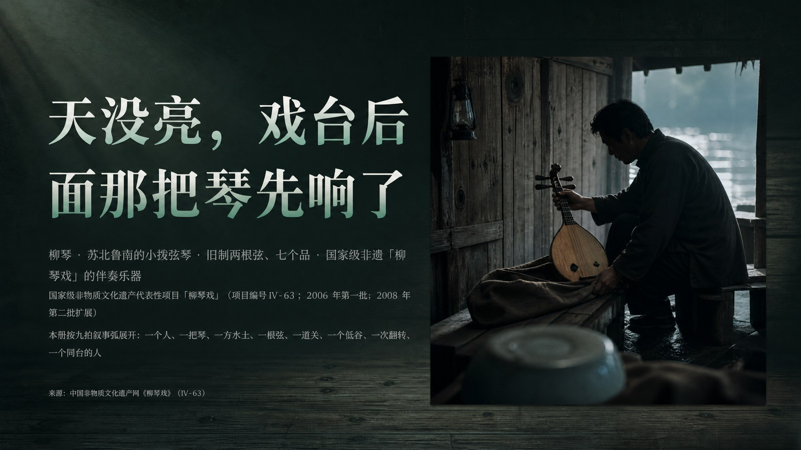
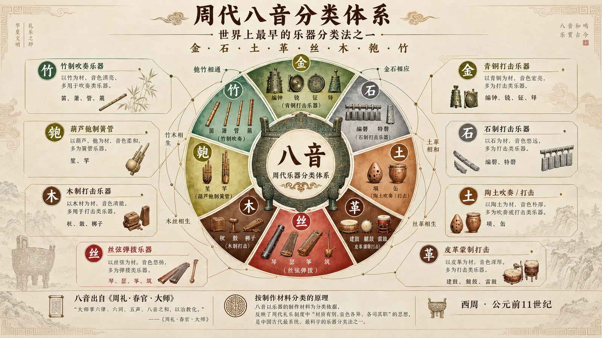
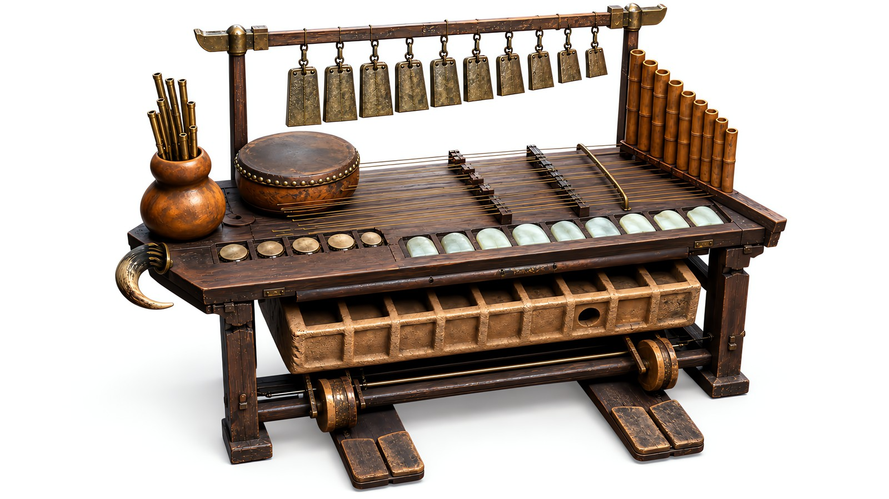

八千年声音档案 / ARCHIVE OF SOUND
中国 传统乐器
72 种乐器：71 件曾在这片土地上响过，第 72 件还不存在 —— 它由那 71 件推演出来。从九千年前用鹤骨钻出的音孔，到今天游戏与电影配乐里的二胡；它们没有变成标本，只是一直在换一种方式被听见。

首页主图会按你进来的时段自动切换（清晨 / 午后 / 黄昏 / 夜晚各一组，每 7 秒换一张）—— 鼠标停在图上可暂停，点右下角的小圆点可以手动切换。
这个网站里有什么
一套给年轻人的中国乐器使用说明书
不按朝代堆年表，也不摆学术架子。四大类 71 件历史乐器，加一件推演中的第 72 件，每种都有它的来历、音色、名曲，以及今天在哪里还能听到它。图片、动画、视频位置已全部预留，随时可以填上你自己的素材。
Wall · 每次刷新随机换一批
先认脸，再认声音
站内已经配上图片的乐器，随机挑八件摆在这里（刷新一次换一批）。 每一张都能点进详情页 —— 那里还有它的 3D 爆炸分解图、发声原理、历史演变与代表曲目。
Level 01 · 只有一层分类
四大类，一类一种发声方式
吹、弹、拉、打——划分依据只有一条：声音是怎么被弄出来的。点开任意一类，直接就是具体乐器，没有更深的层级要翻。第五张卡片不属于历史：它是本站按前四类的长处推演设计的一件新乐器，全站的第 72 件。
Featured · 先听熟的
你一定听过，但未必叫得出名字
从最容易被认出的开始。每一种都能点进详情页，看它的历史、音色、代表曲目，以及那些留好的图片、动画与演奏音频。
Eight Timbres · 比欧洲早两千年的分类法
八音：按材料分类的古老智慧
金、石、土、革、丝、木、匏、竹。周代人按制作材料把乐器分成八类，这是世界上最早的乐器分类体系之一，也顺手解释了中国乐器为什么音色差异这么大。

八音关系图 · 按制作材料分类：金 · 石 · 土 · 革 · 丝 · 木 · 匏 · 竹，各以材质定音色、各司其职。 同一张表里还标出了八类之间的相生关系 —— 展开完整八音专题。
八音关系图 · 按制作材料分类：金 · 石 · 土 · 革 · 丝 · 木 · 匏 · 竹，各以材质定音色、各司其职。 同一张表里还标出了八类之间的相生关系 —— 展开完整八音专题。
Devised · 第 72 件 · 推演新制
一件还不存在的乐器，按 71 件的长处推出来
本站收录的 71 件，有出土实物、有文献、有传承人。第 72 件「龢」什么都没有 —— 它由这 71 件推演而来： 八种材料各出九件发声体，共七十二；吹、弹、拉、打四种发声法，一个人坐着就能同时开工。设计底稿是一张 71 行的对照表，每一行都是一件真乐器。

主图 · 龢 概念特写（AI 辅助生成示意，非实物照片）· 设计推演详见专页
琴者，禁也。禁邪归正，以和人心。—— 《白虎通》· 汉 · 班固